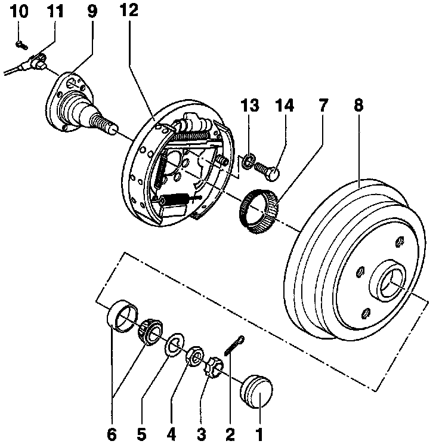
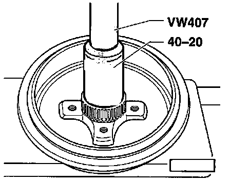

Brake Drum: Service and Repair

Component Notes And Information
NOTE: During removal and installation procedures, refer to the component location illustration above and component notes below.
CAUTION
^ Do not re-use fasteners that are worn or deformed in normal use.
^ Some fasteners are designed to be used only once, and are unreliable and may fail if used a second time.
^ This includes, but is not limited to, nuts, bolts, washers, circlips and cotter pins.
^ Always follow recommendations in these instructions, replace these fasteners with new parts where indicated, and any other time it is deemed necessary by inspection.
1 Grease cap
- Removing/Installing, refer to Transmission and Drivetrain
2 Cotter pin
- Always replace
3 Lock ring
4 Nut
- Adjusting wheel bearing play, refer to Transmission and drivetrain
5 Thrust washer
6 Outer wheel bearing
7 ABS wheel speed sensor rotor
- Only on vehicles with ABS
- Removing and installing, refer to Figs. 2 and 3 below
8 Brake drum
- Clean thoroughly, check for wear, damage, damaged wheel bolt threads and dimensions
- Vehicles with front wheel drive:
Diameter: 200 mm (7.874 inch)
Wear limit: 201 mm (7.913 inch)
9 Stub axle
10 Socket-head bolt
- Tighten to: 10 Nm (7 ft lb)
11 ABS wheel speed sensor
- Only on vehicles with ABS
- Before installing sensor, clean mounting hole inner surface and coat with lubricating paste, Part No. G 000 650, or equivalent
12 Backing plate with brake shoes
- Release brake adjuster before removing brake drum, refer to Fig. 1 below
13 Dished washer
- Large contact surface faces backing plate
14 Hex bolt
- Tighten to: 60 Nm (44 ft lb)
Procedures

Fig. 1 Releasing Brake Shoe Adjustment
- Insert screwdriver through wheel bolt hole in brake drum and push adjusting wedge upward to back shoes away from drum.

Fig. 2 Removing ABS Wheel Speed Sensor Rotor
- Remove brake drum.
- Using two screwdrivers, pry off ABS wheel speed sensor rotor.

Fig. 3 Installing ABS Wheel Speed Sensor Rotor
- Press on ABS wheel speed sensor rotor.
- Install brake drum.
- Adjust wheel bearing play, refer to Transmission and Drivetrain.
- Firmly press down on brake pedal one time to adjust rear brakes.